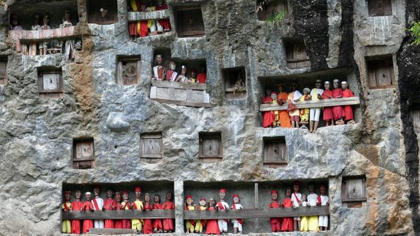

Pemakaman Sakral Rambu Solo
Tana Toraja memang terkenal dengan keunikan kebudayaannya. Salah satu budaya Toraja yang unik adalah upacara pemakaman yang disebut Rambu Solo. Rambu Solo adalah suatu prosesi pemakaman masyarakat Tana Toraja, yang tidak seperti pemakaman pada umumnya. prosesi upacara rambu soloMelalui upacara Rambu Solo inilah, bisa Anda saksikan bahwa masyarakat Tana Toraja sangat menghormati leluhurnya. Prosesi upacara pemakaman ini terdiri dari beberapa susunan acara. Dimana dalam setiap acara tersebut Anda bisa menyaksikan nilai-nilai kebudayaan yang sampai sekarang masih dipertahankan oleh masyarakat Tana Toraja.
Secara garis besar upacara pemakaman terbagi kedalam 2 prosesi, yaitu Prosesi Pemakaman (Rante) dan Pertunjukan Kesenian. Prosesi-prosesi tersebut tidak dilangsungkan secara terpisah, namun saling melengkapi dalam keseluruhan upacara pemakaman. Prosesi Pemakaman atau Rante tersusun dari acara-acara yang berurutan. Prosesi Pemakaman (Rante) ini diadakan di lapangan yang terletak di tengah kompleks Rumah Adat Tongkonan.
Dalam adat istiadat Tana Toraja, masyarakat mempercayai bahwa setelah kematian maih ada sebuah ‘dunia’. ‘Dunia’ tersebut adalah sebuah tempat keabadian dimana arwah para leluhur berkumpul. Serta merupakan tempat peristirahatan. Masyarakat Toraja menyebutnya Puya, yang berada di sebelah Selatan Tana Toraja. Di Puya inilah, arwah yang meninggal akan bertranformasi, menjadi arwah gentayangan (Bombo), arwah setingkat dewa (To Mebali Puang), atau arwah pelindung (Deata). Masyarakat Toraja mempercayai bahwa wujud transformasi tersebut tergantung dari kesempurnaan prosesi Upacara Rambu Solo. Oleh karena itu, Rambu Solo juga merupakan upacara penyempurnaan kematian.